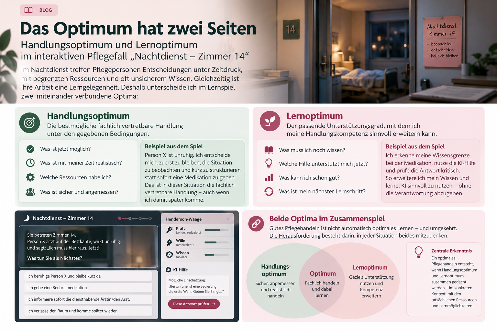

Das Optimum hat zwei Seiten
Handlungsoptimum und Lernoptimum im interaktiven Pflegefall „Nachtdienst – Zimmer 14“.
Im Nachtdienst treffen Pflegepersonen Entscheidungen unter Zeitdruck, mit begrenzten Ressourcen und oft unsicherem Wissen. Gleichzeitig ist dieselbe Situation eine Lerngelegenheit. Deshalb unterscheide ich im Lernspiel zwei miteinander verbundene Optima.

Die Idee hinter dem interaktiven Lernfall: fachlich handeln und dabei weiterlernen.
Was ist das Handlungsoptimum?
Das Handlungsoptimum ist die bestmögliche fachlich vertretbare Handlung unter den gegebenen Bedingungen. Es ist nicht automatisch die umfassendste oder schnellste Handlung. Im Nachtdienst zählen auch Zeit, Sicherheit, die aktuelle Verfassung der Person und die verfügbaren Ressourcen.
Im Lernfall „Nachtdienst – Zimmer 14“ bedeutet das: Die lernende Person beobachtet zunächst, was passiert, ordnet die Situation ein und entscheidet dann. Sie muss sich fragen:
- Was ist jetzt möglich?
- Was ist mit meiner Zeit realistisch?
- Welche Ressourcen habe ich?
- Was ist sicher und angemessen?
Person X ist unruhig. Eine mögliche gute Entscheidung ist, zunächst zu beobachten und die Situation kurz zu strukturieren, statt sofort eine Medikation zu geben. Das ist nicht Untätigkeit, sondern eine fachlich begründete Priorität.
Was ist das Lernoptimum?
Das Lernoptimum bezeichnet den passenden Unterstützungsgrad, mit dem eine Person ihre Handlungskompetenz sinnvoll erweitern kann. Lernen bedeutet dabei nicht, jede Unsicherheit sofort zu beseitigen. Es bedeutet, die nächste Frage zu erkennen und eine Hilfe so zu nutzen, dass eigenes Denken möglich bleibt.
Im Lernspiel können Hinweise, die Pflegetheorie nach Henderson und ein simuliertes KI-Feedback als Lernhilfen eingesetzt werden. Die entscheidende Frage lautet nicht: „Was sagt die KI?“ Sondern:
Kann ich diesen Vorschlag fachlich prüfen, begründen und auf die konkrete Situation beziehen?
Die KI-Hilfe ist deshalb absichtlich nicht immer zuverlässig. Sie kann plausibel klingen und trotzdem an der Situation vorbeigehen oder sogar gefährlich sein. So wird die Fähigkeit geübt, Unterstützung kritisch zu verwenden.
Warum beide Optima zusammengehören
Gutes Pflegehandeln ist nicht automatisch optimales Lernen – und optimales Lernen führt nicht automatisch zu einer sofort perfekten Handlung. Wer unter Zeitdruck sicher handelt, braucht nicht unbedingt eine lange Erklärung. Wer noch wenig Erfahrung hat, braucht dagegen vielleicht einen Hinweis, eine Denkfrage oder eine Rückmeldung.
Ein optimales Pflegehandeln entsteht dann, wenn Handlungsoptimum und Lernoptimum im konkreten Kontext zusammengedacht werden – mit den tatsächlichen Ressourcen und Lernmöglichkeiten der Person.
Das Lernspiel macht diese Verbindung sichtbar. Die Person im Fall hat eine bestimmte Lage. Gleichzeitig bringt auch die lernende Person eine eigene Kraft, einen eigenen Willen und eigenes Wissen mit. Zeit kann dabei wie eine begrenzte Kraft wirken; Haltung und Motivation beeinflussen den Willen; Lernhilfen erweitern das verfügbare Wissen.
Was soll nach dem Spiel bleiben?
Am Ende geht es nicht nur darum, wie viele Entscheidungen richtig waren. Wichtiger sind Fragen wie:
- Woran habe ich erkannt, was Person X gerade fehlte?
- Wann war Gründlichkeit hilfreich, wann wurde sie unrealistisch?
- Wann hätte ich der KI geglaubt – und warum?
- Welche Unterstützung brauche ich für meinen nächsten Lernschritt?
Das Spiel ist damit kein Test mit einer versteckten Musterlösung. Es ist eine kleine Lernwelt, in der Handeln, Begründen und Weiterlernen miteinander verbunden werden.